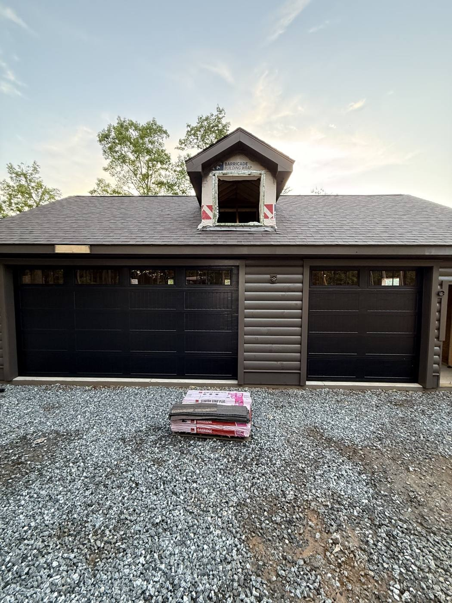

Home / Chesnee, SC
Chesnee, Cowpens and the foothills — quick service from nearby Boiling Springs. Springs from $290, new doors from $1,950 installed.
Chesnee, SC
Chesnee is just up Highway 221 from our shop in Boiling Springs — one of the closest towns we serve. We work on everything from farmhouse garages and detached shops to new builds near Cowpens National Battlefield. Rural properties often have oversized or 14-foot doors on workshops and barns: we install and service those too, including heavy-duty springs and wall-mount openers. Local company, owner on every estimate, written prices before work starts.
Services & Prices
| Service | Details | Price |
|---|---|---|
| Spring replacement | Torsion springs, parts & labor included | from $290 |
| Garage door repair | Cables, rollers, track, panels, off-track doors | $150 – $350 |
| Opener installation | LiftMaster, Chamberlain & Genie — chain, belt, smart WiFi | $300 – $750 |
| New door installation | Insulated steel doors, old door hauled away | from $1,950 |
| Tune-up & safety check | Lubrication, balance, safety sensors, hardware tightening | exact quote by phone |
Around Chesnee we work on a lot of rural property: farmhouses with detached garages, workshops and barns with oversized doors, and newer homes along Highway 221 and Highway 11. Big doors need correctly sized springs, strong tracks and the right opener, and they take more abuse from dust, pollen and weather. We bring the parts to handle residential and shop doors on the same truck, so most repairs are finished on the first visit.

Doors up to 14 feet with heavy-duty springs and wall-mount openers.
Springs, cables, rollers and seals on detached garages and barns.
Carriage-house and long-panel doors that suit a country home.
More help: cable repair · off-track doors · opener repair · panel replacement
Yes — oversized doors, 12–14 ft openings, high-lift tracks and heavy-duty torsion springs for workshops and barns are a regular part of our week in northern Spartanburg County.
Chesnee is about 15 minutes from our base in Boiling Springs, so same-day and often same-morning service is realistic. Call or text (864) 921-7373.
Yes. We install and service oversized doors, including heavy-duty springs and wall-mount jackshaft openers.
Chesnee is one of the closest towns to our Boiling Springs shop, so same-day service is normal.
Ten minutes down Highway 9: Boiling Springs and garage door repair in Spartanburg, SC.
Call or text now — same-day service available, free on-site estimates for new doors.